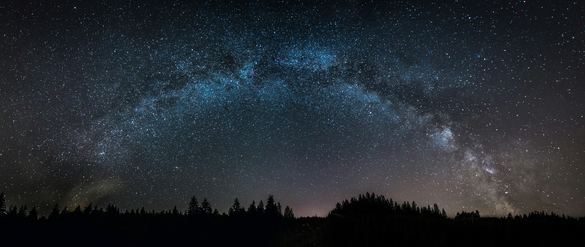

Posmatrajmo zvezde zajedno
Doživite čaroliju svemira u našoj opservatoriji u Zrenjaninu.
Najave događajaDobrodošli u astronomsku opservatoriju
Naša misija je da približimo astronomiju svima, kroz javna posmatranja, predavanja i radionice. Istražite univerzum zajedno sa nama i otkrijte tajne beskrajnog svemira.
Saznaj više

Galaksija u daljini
Pogledajmo čuda kosmosa kroz naš teleskop.

Misteriozne magline
Pridruži se radionicama i nauči više o svemiru.

Noć posmatranja
Istraži nebo uživo u našoj opservatoriji.